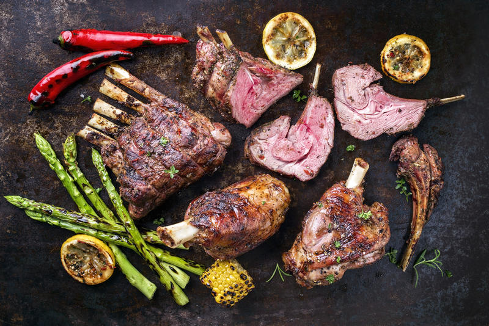

Aprende a realizar esta deliciosa receta realizada por nuestro chef Nicolás Butterfield.

Ingredientes
Sal A gusto
Costillar de cordero
1 Unidad
Aceite de oliva
cda.
Puré de Batatas
Crema de leche
100 cc
Sal y pimienta
A gusto
Aceitunas negras
150 g
Batatas
4 Unidades
Salsa
Echalotte
1 Unidad
Vino tinto
200 cc
Sal y pimienta
A gusto
Manteca
50 g
Tapenade
Piñones
1 cda.
Torre de Vegetales
Zucchinis
2 Unidades
Berenjenas
2 Unidades
Sal
A gusto
Morrones amarillos
2 Unidades
Morrones colorados
2 Unidades
Aceite de oliva
Cantidad necesaria
Morrones verdes
2 Unidades
Preparacion:
Separe las costillas de cordero y raspe los huesos hasta dejarlos limpios.
En una sartén con aceite de oliva selle las costillas de cordero.
Pase a una platina, sale y termine la cocción en el horno.
Salsa
Pique finamente la echalote.
En la misma sartén donde selló el cordero saltee la echalote.
Deglase con el vino y deje reducir un poco.
Salpimente.
Monte con la manteca fría.
Torre de vegetales
Pincele los morrones, con aceite de oliva y ase en el horno.
Corte los morrones en discos.
Corte las berenjenas y los zucchini en finas rodajas.
Rocíe el grill caliente con aceite de oliva y cocine los morrones, los zucchini y las berenjenas.
Condimente con sal.
Puré de batatas
Descaroce las aceitunas y corte en octavos.
Reserve.
Pele las batatas y cocine en abundante agua hirviendo.
Cuele y procese a puré con un poco del agua de cocción.
Añada la crema de leche y las aceitunas.
Salpimente.
Presentación
En el costado de un plato forme una torre alternando los morrones, zucchini y berenjena, en otro costado el cordero y el otro costado el puré.
Alrededor sirva la salsa.